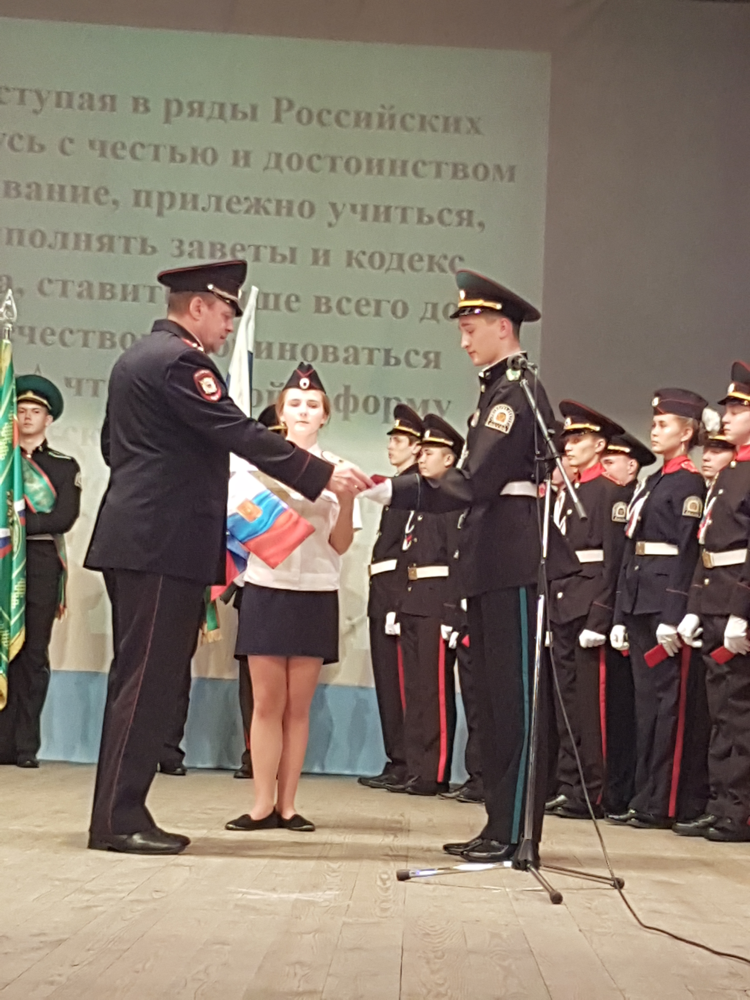

Присяга - самое главное и памятное событие в биографии каждого кадета. В Михайловском лицее церемония принятия присяги проходит, как правило, 12 декабря в День Конституции Российской Федерации. На мероприятие приглашается много гостей: учащихся лицея, учителей, родных и близких новоиспеченных кадет. Оно проходит на сцене Михайловского МФКЦ. Вчерашние мальчишки и девчонки словно становятся взрослее, присягнув на вечную верность нашей родине.
